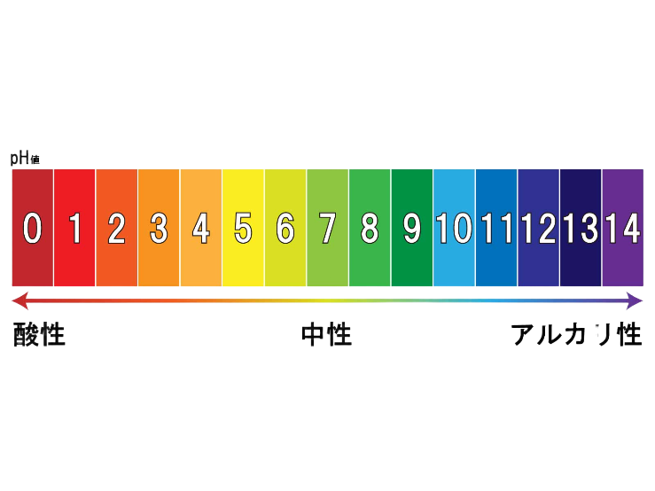

pH
0-14の指標で、水が酸性・中性・アルカリ性のどの程度なのかを表す指標です。
pH7付近を中性とし、数字が小さいほど酸性、大きいほどアルカリ性になります。
水質においては、7（中性）が最高とされています。
pHが7より高いアルカリ性だと、「アンモニア(NH3)」と呼ばれる物質の危険性が増し、魚が死にやすくなります。
その他にも、細胞を傷つけたり、多くの悪影響があります。
逆に、pHが7より低い酸性に傾きすぎると、酸素をうまく取り込めなくなり死んでしまいます。
その他にも、pHの傾きは、微生物の死滅などにもつながるので、とても大切な値なのです。

DO
Dissolved Oxygen（溶存酸素）の略称です。
水中に溶けている酸素の量を表します。
私たちと同じく、魚などの水に住む生き物も酸素が必要です。
この値が低すぎると、生き物たちは酸素が足りなくて、死んでしまったり、赤ちゃんがうまく生まれなくなってしまいます。
DOは水温にも影響を受けます。水温が高いと、水の中にある酸素が外に逃げてしまいます。
この結果、水中の酸素が少なくなってしまいます。
その他にも、BODやCODにも影響を受けます。
COD75
水中の有機物などによる汚れの程度を評価するために使われる指標の一つです。
CODは化学的酸素要求量を意味します。
化学物質を使用して汚れや有機物を分解する際に消費される酸素量を示します。
(微生物が消費する酸素をBODといいます)
数値が高いほど、酸素の消費が多く、水質が悪いことを意味します。
BOD75
BODは生物化学적酸素要求量を意味します。
水の中には、たくさんの微生物（大変小さな生き物）がいます。
微生物は、水の中の栄養（有機物）を食べて生きています。
微生物は食べるとき、酸素を消費します。
この時の、消費される酸素を示したのがBOD（Biochemical Oxygen Demand）です。
SS
Suspended Solids（浮遊物質）の略称です。
TSSと呼ばれることもあります。
水中に浮遊している粒子状物質の量を示し、水の濁りのことです。
川の流れが不十分だと、汚いものが川にたまってしまうので、SSの値は高くなります。
汚いものや栄養がたまりすぎると、生き物に悪い影響を与えてしまいます。
75の意味
BOD75やCOD75などの75は、全体のデータを小さい順に並べたとき、下から75%目（3/4）に位置する数値のことです。
これによって、全体のうち75%の日数で、どれほどの値以下に保たれているかを知ることができます。
「75」のおかげで、大雨などによる極端なデータの変化を予防できます。
よって、より正確なデータを得ることができるのです。
NTU
水の濁り（濁度）を表す単位の一つです。
NTUはNephelometric Turbidity Unitの略称で、光の散乱などを利用して濁度を評価します。
AIモデルでは、このNTUを測定しています。
AIモデルのメカニズムについては、こちらのリンクを参照してください。
市民調査
五感観察
五感を使った調査方法で、高価な機材がなくとも水質の状態を観察できます。
また安全性も比較的高いため、子どもや初心者でも気軽に水質調査を体験できます。
五感でも水質調査には十分な情報が得られます。
例:水のにおい、透明度、周囲の騒音、魚の有無、水に触れた際の感覚など。
このウェブサイトの詳しい目的や経緯については、このリンクをクリックしてください！
ドキュメントのダウンロードが始まります。